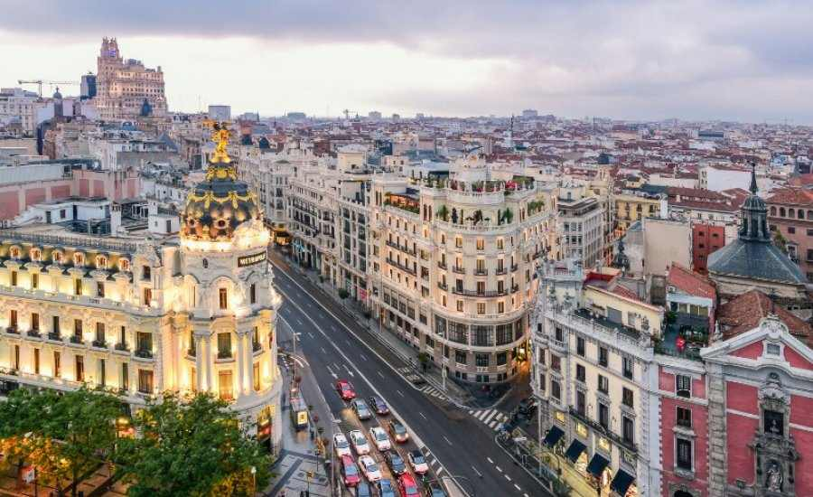

До кольорової гамми райдуги входять:
- Червоний
- Жовтогарячий
- Жовтий
- Зелений
- Блакитний
- Синій
- Фіолетовий
- Червоний
- Жовтогарячий
- Жовтий
- Зелений
- Блакитний
- Синій
- Фіолетовий

Украї́на (МФА: [ʊkrɐˈjɪn̪ɐ] ( прослухати)) — держава, розташована в Східній та частково в Центральній Європі, у південно-західній частині Східноєвропейської рівнини, держава-правонаступниця Української Радянської Соціалістичної Республіки, Української Народної Республіки, Київської Русі. Площа становить 603 628 км². Найбільша за площею країна з тих, чия територія повністю лежить у Європі.[5] Межує з Білоруссю на півночі, Польщею, Словаччиною та Угорщиною — на заході, Румунією та Молдовою — на південному заході, Росією на сході і північному сході. На півдні і південному сході омивається Чорним і Азовським морями.

Фра́нція, офіційна назва Францу́зька Респу́бліка (фр. La France, République française) — держава на заході Європи, республіка, яка межує на північному сході з Бельгією, Люксембургом і Німеччиною, на сході з Німеччиною, Швейцарією, південному заході з Іспанією й Андоррою, на південному сході з Італією та Монако на півдні омивається Середземним морем, на заході — Атлантичним океаном.
Іспа́нія (ісп. España, МФА: [esˈpaɲa]; заст. Гишпа́нія[1] від лат. Hispania), раніше Еспа́нія,[2][3] офіційно Королі́вство Іспа́нія — держава на південному заході Європи. Займає більшу частину Піренейського півострова, Балеарські та Пітіузькі острови в Середземному морі, Канарські острови в Атлантичному океані.
 Іспанія омивається Середземним морем й Атлантичним океаном. По суходолу Іспанія межує з Португалією на заході (спільний кордон — 1214 км), з Францією — по гребенях Піренейських гір (623 км), з Андоррою (63,7 км), з Гібралтаром та з Марокко.